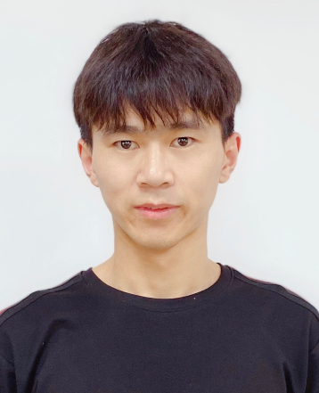

Ph.D. Candidate in Astrophysics
School of Physics and Astronomy, Sun Yat-sen University
Expected Graduation: 2027
Research Interests: Gamma-Ray Bursts (GRBs), Tidal Disruption Events (TDEs), Compact Binaries
My research focuses on the progenitors, physical mechanisms, and observational properties of high-energy transient phenomena, including gamma-ray bursts (GRBs), fast X-ray transients, and tidal disruption events (TDEs).
By combining theoretical modeling, multi-wavelength data analysis, and hydrodynamic simulations, I investigate the dynamical evolution and radiation processes of transient sources to interpret their observational signatures and explore their underlying physical origins.
I serve as an observation duty assistant for the Einstein Probe (EP) mission (since Oct. 2025) and as an affiliated scientist of the SVOM scientific team (since Nov. 2024).
Host: Nanjing University · Nanjing, China
Host: Chinese Astronomical Society · Zhuhai, China
Host: Graduate School, SYSU · Guangzhou, China
Host: School of Physics and Astronomy, SYSU · Zhuhai, China
Host: School of Physics and Astronomy, SYSU · Zhuhai, China
Host: School of Physics and Astronomy, SYSU · Guangzhou, China